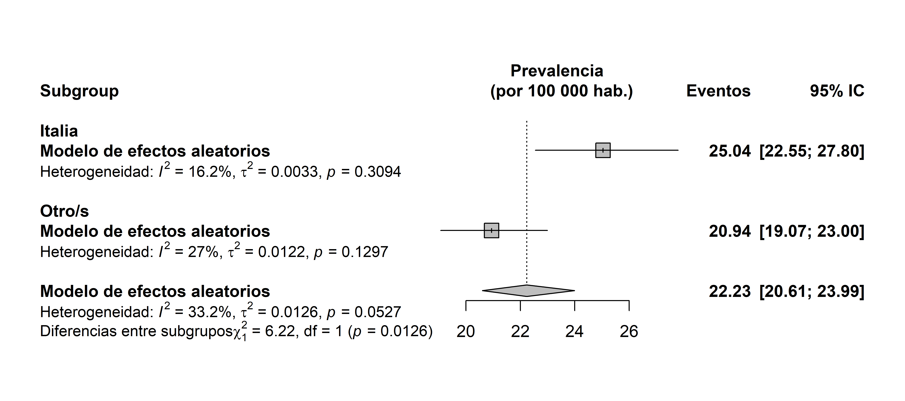

# Carga de paquetes
library(meta) # Modelos de meta-análisis
library(scico) # Paletas de colores accesibles
library(janitor) # Tablas de frecuencia
library(tidyverse) # Manejo de datos
# Paleta colorblind-friendly
pal <- scico(n = 4, palette = "buda")Análisis de moderadores y sesgo de publicación
© 2025 Instituto Nacional de Epidemiología “Dr. Juan H. Jara” (ANLIS) - CC BY-NC 4.0


Análisis de moderadores
El análisis de moderadores permite explorar fuentes de heterogeneidad en los estudios incluidos en un meta-análisis. Se puede realizar mediante la inclusión de una variable independiente categórica (análisis de subgrupos) o numérica (metarregresión).
Este análisis ayuda a evaluar hipótesis sobre variaciones en la magnitud del efecto entre estudios y a interpretar diferencias en los resultados. Sin embargo, para evitar sesgos de selección, las variables a utilizar como moderadores deben definirse previamente al extraer los datos relevantes para la revisión sistemática.
El análisis de moderadores consta de dos etapas:
Estimación del efecto dentro de cada subgrupo.
Prueba estadística para evaluar diferencias entre subgrupos.
Para implementar este análisis en R, se añade el argumento subgroup al modelo de meta-análisis. A continuación, realizaremos un análisis de subgrupos sobre el modelo de prevalencia ajustado anteriormente, considerando el país (country) como moderador.
Antes de comenzar con el ejemplo, cargaremos los paquetes necesarios:
Cargamos los datos y exploramos su estructura:
# Cargar datos
datos_prev <- dat.crisafulli2020
# Inspeccionar estructura de los datos
glimpse(datos_prev)Rows: 26
Columns: 7
$ study <chr> "Brooks (1977)", "Danieli (1977)", "Takeshita (1977)", "Drummo…
$ pubyear <int> 1977, 1977, 1977, 1979, 1980, 1980, 1981, 1982, 1983, 1983, 19…
$ country <fct> UK, IT, JP, NZ, AU, IT, IT, CA, FR, IT, DE, IT, JP, CA, NO, IT…
$ from <int> 1953, 1952, 1956, NA, 1960, 1952, 1955, 1950, 1978, 1969, 1977…
$ to <int> 1968, 1972, 1970, NA, 1971, 1972, 1974, 1979, 1978, 1980, 1984…
$ cases <int> 47, 66, 19, 2, 99, 105, 73, 110, 12, 156, 48, 76, 50, 5, 16, 2…
$ total <int> 177413, 234396, 91157, 10000, 532302, 371698, 301283, 420374, …Usaremos la función tabyl() del paquete janitor (Firke 2024) para generar una tabla de frecuencias de los niveles de la variable country:
tabyl(datos_prev, country) |> # Genera tabla de frecuencia
arrange(-n) |> # Ordena por frecuencia
adorn_pct_formatting() # Proporciones a porcentajes country n percent
IT 6 23.1%
CA 3 11.5%
UK 3 11.5%
JP 2 7.7%
AU 1 3.8%
BE 1 3.8%
CY 1 3.8%
DE 1 3.8%
DK 1 3.8%
EE 1 3.8%
FR 1 3.8%
NL 1 3.8%
NO 1 3.8%
NZ 1 3.8%
SI 1 3.8%
US 1 3.8%Dado que la mayoría de los estudios provienen de Italia y la frecuencia en otros países es baja, crearemos la variable dicotómica pais_cat para categorizar los países en “Italia” y “Otro/s”:
datos_prev <- datos_prev |>
mutate(pais_cat = if_else(
country == "IT", # Condición
"Italia", # Valor si la condición se cumple
"Otro/s" ) # Valor si la condición no se cumple
)Ajustamos el modelo de meta-análisis para proporciones con país como moderador:
# Ajuste modelo
mod_sg <- metaprop(
event = cases, # Casos observados
n = total, # Tamaño de la muestra
studlab = study, # Identificador del estudio
data = datos_prev, # Conjunto de datos
sm = "PLOGIT", # Transformación logit
common = FALSE, # Omitir modelo de efectos fijos
random = TRUE, # Modelo de efectos aleatorios
pscale = 100000, # Escala a casos/100 000 habitantes
subgroup = pais_cat # Moderador categórico
)
# Resumen del modelo ajustado
mod_sgNumber of studies: k = 26
Number of observations: o = 6831388
Number of events: e = 1545
events 95%-CI
Random effects model 22.2342 [20.6056; 23.9915]
Quantifying heterogeneity (with 95%-CIs):
tau^2 = 0.0126; tau = 0.1121; I^2 = 33.2% [0.0%; 58.6%]; H = 1.22 [1.00; 1.55]
Test of heterogeneity:
Q d.f. p-value
Wald 37.41 25 0.0527
LRT 39.01 25 0.0368
Results for subgroups (random effects model):
k events 95%-CI tau^2 tau Q I^2
pais_cat = Otro/s 20 20.9400 [19.0685; 22.9951] 0.0122 0.1104 26.02 27.0%
pais_cat = Italia 6 25.0380 [22.5505; 27.7999] 0.0033 0.0577 5.97 16.2%
Test for subgroup differences (random effects model):
Q d.f. p-value
Between groups 6.22 1 0.0126
Details of meta-analysis methods:
- Random intercept logistic regression model
- Maximum-likelihood estimator for tau^2
- Calculation of I^2 based on Q
- Logit transformation
- Events per 100000 observationsLa salida del modelo es similar a la que obtuvimos al ajustar el modelo para prevalencia, sin embargo, se incorporan dos nuevas secciones. En la sección Results for subgroups (random effects model) se identifican los siguientes elementos:
Identificador de las categorías del moderador.
k: número de estudios en la categoría/subgrupo.events: prevalencia en la categoría/subgrupo.95%-CI: intervalo de confianza al 95% para la prevalencia en la categoría/subgrupo.tau^2: varianza dentro de la categoría/subgrupo.tau: desvío estándar en la categoría/subgrupo.Q: estadístico Q de Cochran para la categoría/subgrupo.I^2: porcentaje de heterogeneidad observado en la categoría/subgrupo.
La segunda sección, Test for subgroup differences (random effects model), contiene los resultados de la prueba para evaluar si existen diferencias estadísticamente significativas entre las categorías o subgrupos.
En los datos de nuestro ejemplo, podemos ver que la prevalencia del evento es mayor en Italia que en otros países y que estas diferencias son estadísticamente significativas.
Para visualizar los resultados, añadimos al forest plot algunos de los siguientes argumentos:
layout = "subgroup": muestra los estimadores de efecto para cada subgrupo y el estimador global, omitiendo los resultados de los estudios individuales.sort.subgroup: ordena alfabeticamente las categorías de la variable moderadora.calcwidth.subgroup: ajusta el ancho del forest plot para que se muestren correctamente las etiquetas de las categorías/subgrupos.calcwidth.tests: ajusta el ancho del forest plot para que se muestren correctamente las etiquetas del test de hipótesis de diferencias en las categorías/subgrupos.print.subgroup.name: muestra la etiqueta de la variable moderadora delante de cada categoría (TRUE, por defecto) o lo oculta (FALSE).label.test.subgroup.common: etiqueta para los resultados del test para diferencias entre subgrupos en el modelo de efectos fijos.label.test.subgroup.random: etiqueta para los resultados del test para diferencias entre subgrupos en el modelo de efectos aleatorios.
En nuestro ejemplo:
forest(
mod_sg,
layout = "subgroup",
sort.subgroup = TRUE,
calcwidth.subgroup = TRUE,
calcwidth.tests = TRUE,
print.subgroup.name = FALSE,
smlab = "Prevalencia \n (por 100 000 hab.)",
rightlabs = c("Eventos", "95% IC"),
hetlab = "Heterogeneidad: ",
text.random = "Modelo de efectos aleatorios",
label.test.subgroup.random = "Diferencias entre subgrupos"
)
A diferencia de cuando ajustábamos modelos sin moderadores, el argumento col.diamond va a cambiar tanto el color del estimador global como de los estimadores para cada categoría o subgrupo, mientras que el argumento col.square no aplica ningún cambio sobre el forest plot.
Algunos paquetes como foresploter, ggforestplot y orchaRd permiten realizar forest plot visualmente más atractivos, pero para utilizarlos necesitamos extraer los datos del modelo ajustado.
Para instalar estos paquetes ejecutamos el siguiente código:
# foresploter
install.packages("forestploter")
# ggforestplot
remotes::install_github("https://github.com/nightingalehealth/ggforestplot")
# orchaRd
remotes::install_github("https://github.com/daniel1noble/orchaRd")Una vez instalados los activamos:
# Carga paquetes
library(forestploter)
library(ggforestplot)
library(orchaRd)Sesgo de publicación
El sesgo de publicación (publication bias) ocurre cuando los resultados de los estudios publicados no son representativos de todos los estudios realizados sobre un tema. Esto puede distorsionar la síntesis de la evidencia en un meta-análisis, ya que los estudios con resultados positivos o significativos tienen más probabilidades de ser publicados que aquellos con resultados nulos o negativos, comprometiendo la validez de las conclusiones del meta-análisis.
Este sesgo puede influir considerablemente en los resultados de un meta-análisis, ya que si los estudios publicados no reflejan adecuadamente toda la gama de resultados posibles, la estimación del efecto global puede estar sesgada. Por lo tanto, es esencial evaluar y ajustar el sesgo de publicación al realizar un meta-análisis, a fin de garantizar que los resultados sean lo más precisos y representativos posible.
Funnel plot
Es una herramienta gráfica que permite observar la relación entre el estimador de efecto y su variabilidad. En ausencia de sesgo de publicación, se espera que los estudios se distribuyan simétricamente alrededor del estimador de efecto global, formando un patrón similar a un embudo. Si existe sesgo de publicación, los estudios con mayor tamaño de muestra (y, por tanto, mayor precisión) estarán más concentrados en el centro, mientras que los estudios con menor tamaño de muestra se dispersarán de manera asimétrica.
La función funnel() del paquete meta permite generar este diagrama para una visualización rápida.
funnel(mod)Test de Egger
Evalúa la simetría del funnel plot mediante una regresión lineal entre el estimador de efecto y su error estándar. En presencia de sesgo de publicación, se espera que los puntos del diagrama no estén distribuidos simétricamente. Este test proporciona una estimación estadística del sesgo de publicación: un p-valor menor que 0,05 sugiere la presencia de sesgo de publicación.
Este test puede implementarse con la función metabias():
metabias(mod)Test de Begg
Evalúa la relación entre el tamaño del efecto y el error estándar, utilizando un enfoque basado en la correlación de rangos en lugar de una regresión lineal. Un p-valor menor que 0,05 indica la presencia de sesgo de publicación.
Este test puede implementarse con la función metabias(), utilizando el argumento method.bias = "Begg":
metabias(mod, method.bias = "Begg")Trim-and-fill
Estima el número de estudios faltantes debido al sesgo de publicación y ajusta la media global en consecuencia, agregando estudios hipotéticos que representarían los estudios no publicados. Este método ayuda a corregir la estimación del efecto global al incluir los estudios faltantes que no se publicaron debido a su falta de significancia.
En R, este procedimiento puede implementarse con la función trimfill():
trimfill(mod)Generalmente, se recomienda utilizar dos o más estimadores de sesgo de publicación para obtener una visión más completa de la posible presencia de este sesgo. Utilizando diferentes métodos, es posible realizar una evaluación más robusta y precisa del sesgo de publicación y su impacto en los resultados del meta-análisis.
Referencias
Firke, Sam. 2024. «janitor: Simple Tools for Examining and Cleaning Dirty Data». https://CRAN.R-project.org/package=janitor.